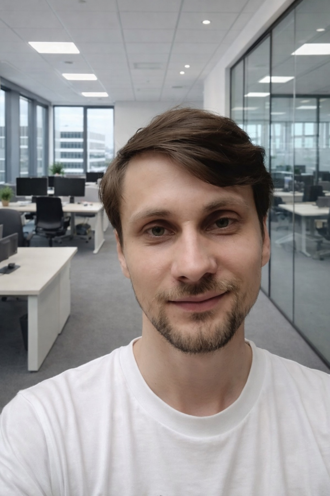

Konstantin
Digital Marketer -> Future Fachinformatiker
Lübeck, Germany
Native
Fluent (C1)
B1 (Target: DTB B2)
Configuring and managing Contabo & Oracle VPS instances for personal projects and learning cloud infrastructure.
Exploring AI tools and automation scripts to streamline workflows and enhance productivity.
Building a comprehensive PKM (Personal Knowledge Management) system using Obsidian for learning and documentation.